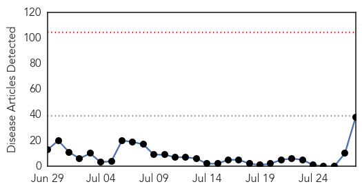
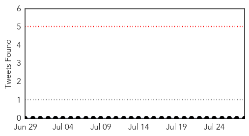

30 Day Trends
Web: 0 alerts, 0 warnings
Twitter: 0 alerts, 0 warnings
Top Articles:
- 1.000
- What is MERS? All you need to know about deadly disease that could be in the UK
- 0.999
- Manchester Royal Infirmary A and E reopens amid Mers tests
- 0.998
- Suspected MERS cases in the UK were false alarms
- 0.998
- South Korea Declares 'de Facto End' To MERS-CoV Outbreak
- 0.998
- Mers virus: All you need to know about the fatal disease
- 0.997
- South Korea declares 'de facto end' to Mers virus
- 0.997
- Suspected Manchester Mers cases prove negative
- 0.997
- MERS outbreak in South Korea over: ‘People can now be free from worry’ says PM
- 0.997
- Patients test negative for Mers after accident and emergency department closed
- 0.995
- MERS virus outbreak over in South Korea
- 0.994
- Two Suspected Cases of MERS in Northern England
- 0.992
- South Korea, declares, Mers,
- 0.991
- RoK declares country effectively out of MERS danger — Talk Vietnam
- 0.991
- South Korea ‘out of MERS danger’ - World News
- 0.987
- MERS outbreak is over
- 0.986
- South Korea declares itself out of the MERS danger ending an arduous fight over several weeks
- 0.986
- End of MERS outbreak in South Korea
- 0.982
- S Korea says it is 'virtually free' of MERS
- 0.980
- South Korea says it is 'virtually free' of MERS • primenews.com.bd
- 0.976
- MERS Threat Over
- 0.976
- S. Korea declares de facto end to MERS outbreak
- 0.971
- MERS Isn't an Epidemic. That Makes It Harder to Find a Cure
- 0.969
- S. Korea âvirtually freeâ of MERS
- 0.964
- (2nd LD) S. Korea declares de facto end to MERS outbreak
- 0.958
- South Korea says Mers threat is over
- 0.953
- (3rd LD) S. Korea declares de facto end to MERS outbreak
- 0.946
- South Korea Survived MERS Onslaught, Declares PM
- 0.946
- South Korean prime minister says MERS threat is over
- 0.939
- South Korea says MERS threat is over
- 0.935
- South Korea sees end of MERS threat after outbreak killed 36
- 0.935
- South Korea sees end of MERS threat after outbreak killed 36
- 0.932
- South Korean PM says MERS threat is over
- 0.926
- South Korea declares de facto end to MERS outbreak
- 0.903
- South Korea sees end of MERS threat after outbreak killed 36
- 0.888
- South Korea sees end of MERS threat after outbreak killed 36
- 0.845
- South Korea sees end of MERS threat after outbreak killed 36
- 0.835
- South Korea declares end to MERS, World Health Organization exercises caution
- 0.827
- South Korea sees end of MERS threat after outbreak killed 36
Top Tweets:
-
No tweets found for Jul 28, 2015
Web/News Articles
Tweets
Article Locations